Visión Artificial y Redes Neuronales: La Revolución Silenciosa de la Inteligencia Artificial 🛠️
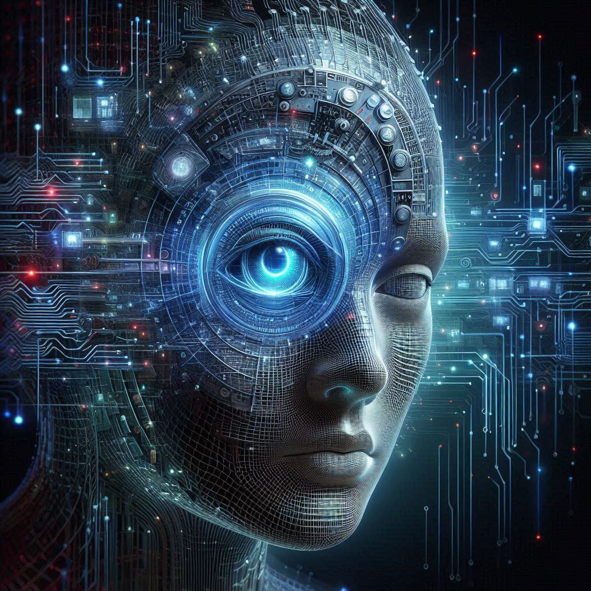Facilitador: Diego Saavedra
Presentación
Ponente: Diego Saavedra
Web: https://statick88.github.io
Computer Vision 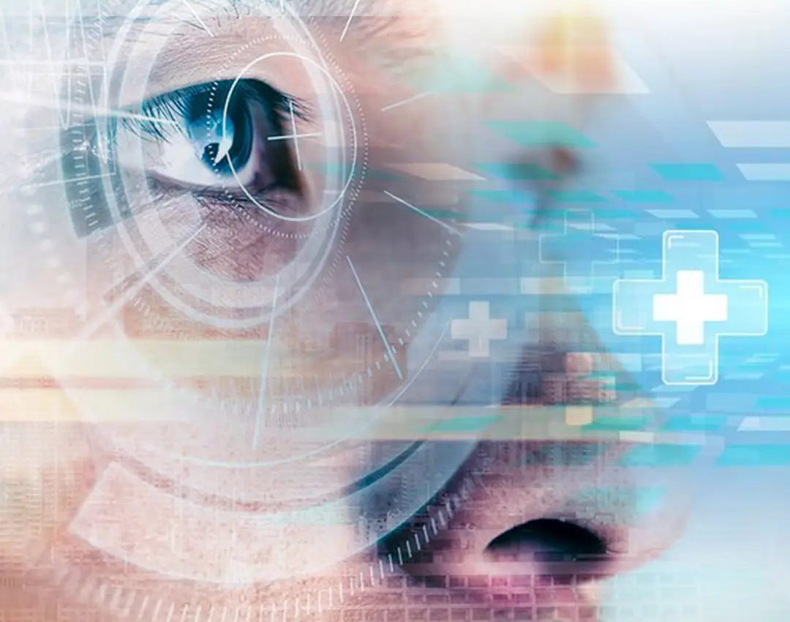
History
Relevancia de la Visión Artificial en la Industria Moderna 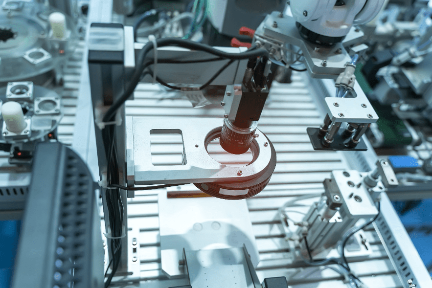
La visión artificial (o visión por computadora) es una rama de la inteligencia artificial que permite a las máquinas interpretar y comprender imágenes y videos, emulando la capacidad visual del ser humano. Esta tecnología tiene un impacto significativo en diversas industrias, mejorando procesos, aumentando la eficiencia y habilitando nuevas aplicaciones.
Sectores Clave y Aplicaciones 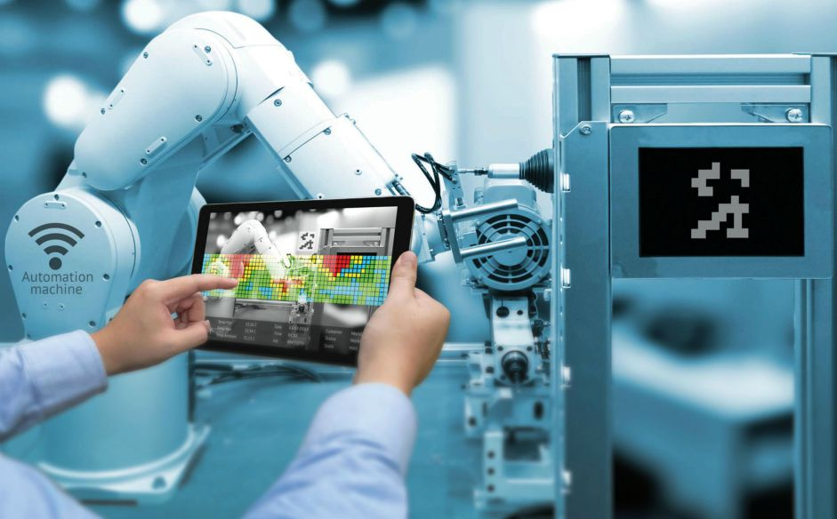
Manufactura y Automatización Industrial
- Control de Calidad: Inspección automática de productos para detectar defectos o inconsistencias en la producción, garantizando altos estándares de calidad.
- Automatización de Procesos: Robots industriales equipados con visión artificial para realizar tareas complejas como ensamblaje, empaquetado y etiquetado.
Sectores Clave y Aplicaciones 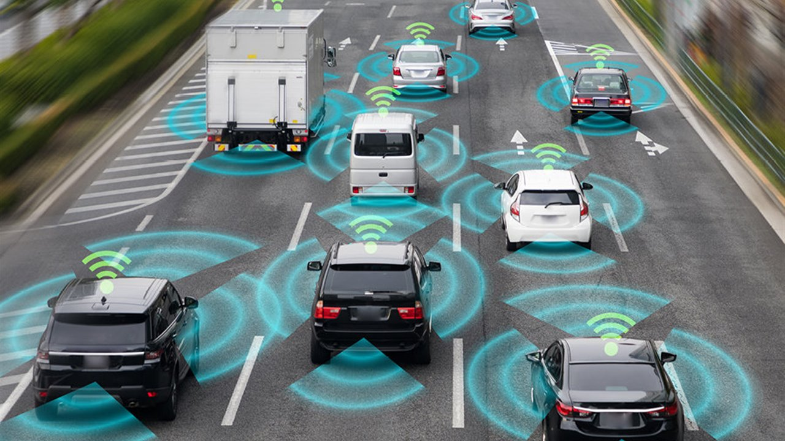
Automoción
- Vehículos Autónomos: Sistemas de cámaras y sensores que permiten a los vehículos navegar, reconocer señales de tráfico, peatones y otros obstáculos en tiempo real.
- Asistencia al Conductor: Funciones como el frenado automático, detección de puntos ciegos, y mantenimiento de carril.
Sectores Clave y Aplicaciones 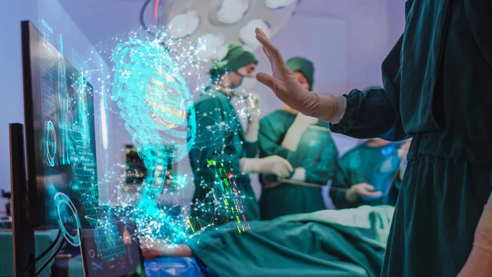
Salud y Medicina
- Diagnóstico por Imagen: Análisis de radiografías, resonancias magnéticas y otras imágenes médicas para detectar enfermedades como cáncer, fracturas o anomalías neurológicas.
- Cirugía Guiada por Imagen: Asistencia en procedimientos quirúrgicos mediante la visualización y análisis en tiempo real.
Sectores Clave y Aplicaciones 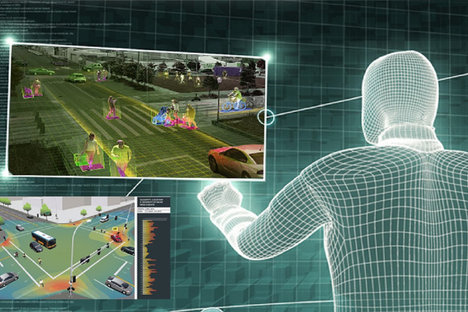
Seguridad y Vigilancia
- Monitoreo en Tiempo Real: Sistemas de cámaras inteligentes capaces de detectar intrusos, identificar comportamientos sospechosos y alertar a las autoridades.
- Reconocimiento Facial: Identificación de personas en lugares públicos para mejorar la seguridad y la eficiencia en la gestión de accesos.
Sectores Clave y Aplicaciones 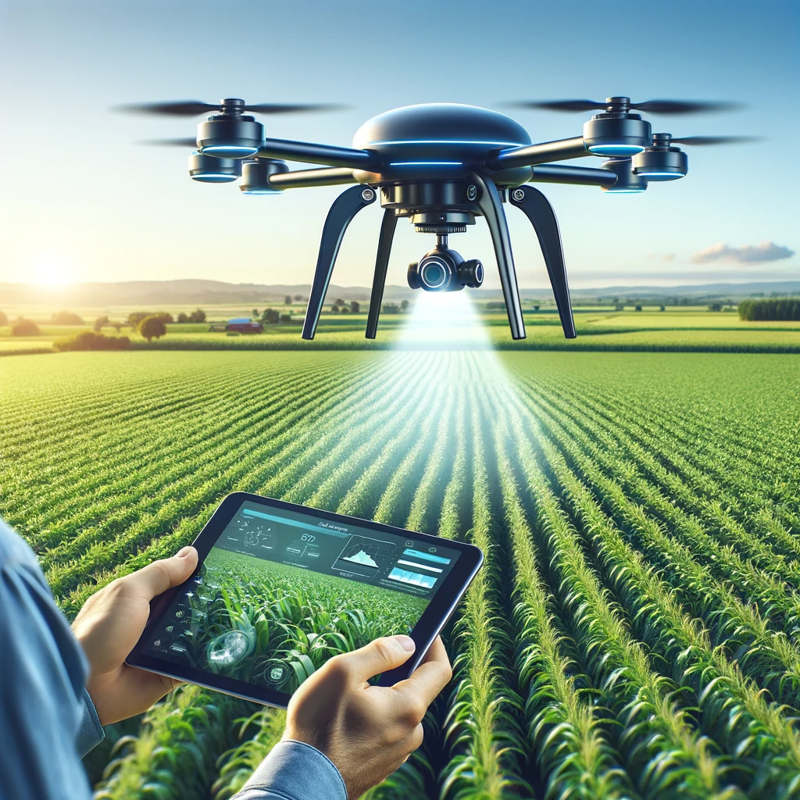
Agricultura
- Agricultura de Precisión: Monitoreo de cultivos mediante drones y análisis de imágenes para optimizar el uso de recursos como agua y fertilizantes.
- Clasificación de Productos: Detección de calidad y madurez de frutas y verduras para su clasificación y embalaje.
Sectores Clave y Aplicaciones
Retail y Comercio
- Sistemas de Pagos Automatizados: Cámaras en tiendas que permiten realizar compras sin pasar por caja, identificando productos y cargando automáticamente el costo en la cuenta del cliente.
- Análisis de Comportamiento del Cliente: Seguimiento de movimientos y comportamiento de los clientes en tiendas físicas para mejorar la disposición de productos y promociones.
Sectores Clave y Aplicaciones
Impacto en la Industria Moderna
- Eficiencia Operacional: La visión artificial automatiza tareas repetitivas y de alta precisión, reduciendo errores humanos y mejorando la productividad.
- Innovación: Permite desarrollar productos y servicios innovadores, como coches autónomos y diagnósticos médicos asistidos por IA, abriendo nuevas oportunidades de mercado.
- Mejora de la Calidad y Seguridad: Las tecnologías de visión artificial aseguran la calidad de los productos y servicios, además de mejorar la seguridad en entornos industriales y públicos.
Sectores Clave y Aplicaciones 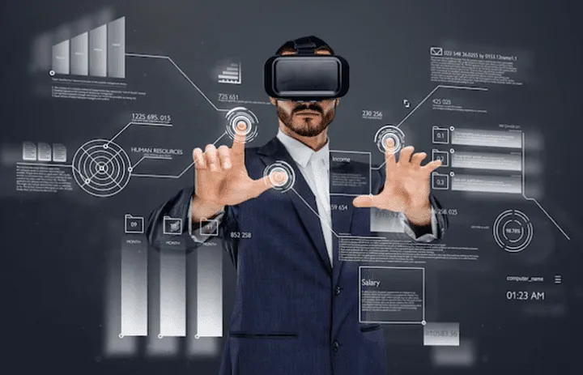
La visión artificial es un pilar fundamental en la transformación digital de la industria moderna, impulsando la automatización, la innovación y la mejora continua en múltiples sectores.
Ejemplos de Aplicaciones Cotidianas y su Impacto
La visión por computador ha trascendido el ámbito industrial, integrándose en numerosas aplicaciones cotidianas que facilitan la vida diaria de las personas y mejoran la eficiencia en diversas actividades.
Sectores Clave y Aplicaciones 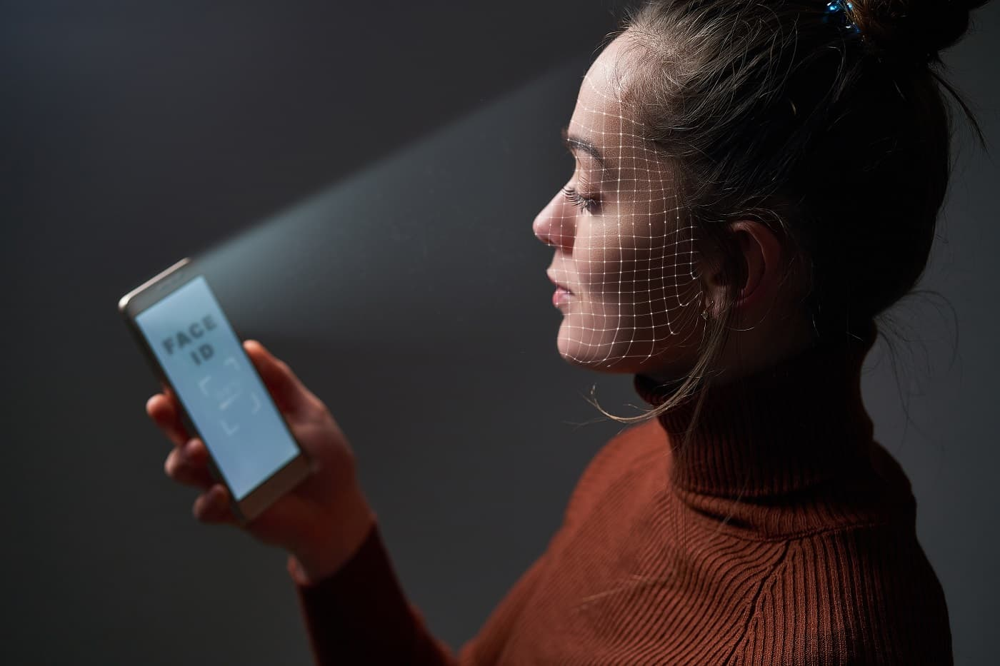
1. Reconocimiento Facial en Dispositivos Móviles
- Aplicación: Desbloqueo de teléfonos y autenticación segura mediante la identificación del rostro del usuario.
- Impacto: Aumenta la seguridad y conveniencia, eliminando la necesidad de contraseñas tradicionales y facilitando el acceso rápido a dispositivos y aplicaciones.
Sectores Clave y Aplicaciones
2. Sistemas de Seguridad y Vigilancia Doméstica
- Aplicación: Cámaras inteligentes para el hogar que detectan movimientos, identifican personas y envían alertas en tiempo real.
- Impacto: Mejora la seguridad del hogar al permitir un monitoreo constante y preciso, disuadiendo intrusos y proporcionando tranquilidad a los propietarios.
Sectores Clave y Aplicaciones 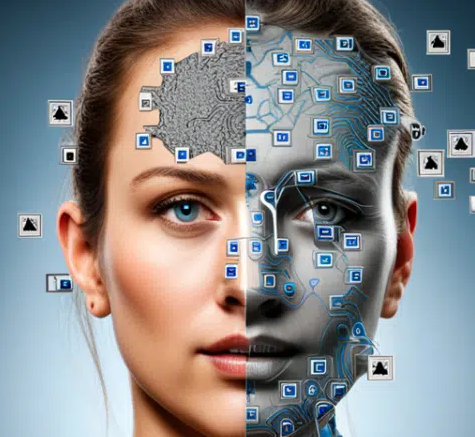
3. Etiquetado Automático de Fotos en Redes Sociales
- Aplicación: Plataformas como Facebook e Instagram utilizan la visión por computador para reconocer rostros en fotos y sugerir etiquetas de amigos automáticamente.
- Impacto: Facilita la organización y el compartimiento de fotos, mejorando la interacción en redes sociales y personalizando la experiencia del usuario.
Sectores Clave y Aplicaciones 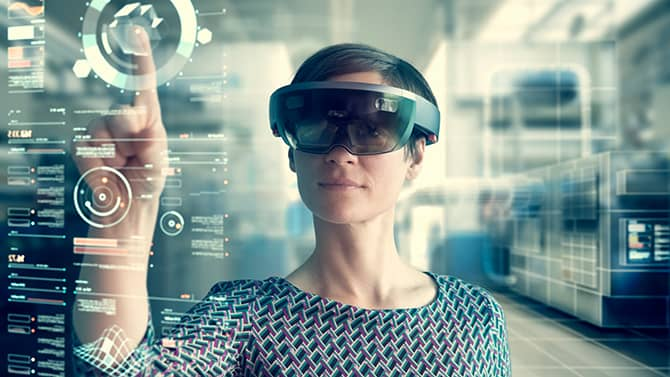
4. Asistentes Virtuales y Realidad Aumentada (AR)
- Aplicación: Asistentes virtuales como Google Lens permiten a los usuarios buscar información en tiempo real simplemente apuntando la cámara del teléfono a un objeto o texto. En AR, aplicaciones como IKEA Place permiten ver cómo se verían los muebles en un espacio real antes de comprarlos.
- Impacto: Simplifica la búsqueda de información y la toma de decisiones de compra, además de mejorar la experiencia de usuario en aplicaciones de AR al integrar el mundo digital con el físico.
Sectores Clave y Aplicaciones 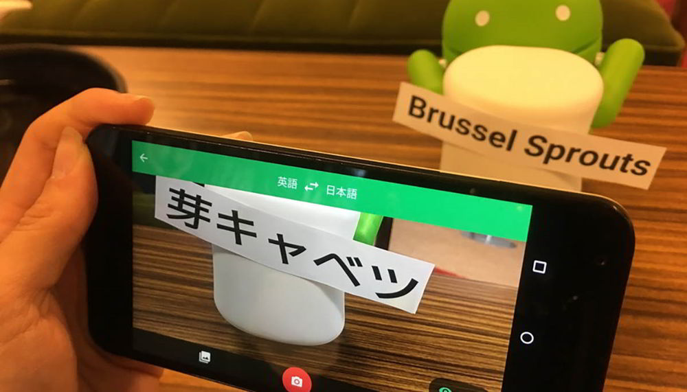
5. Aplicaciones de Traducción en Tiempo Real
- Aplicación: Google Translate utiliza visión por computador para traducir texto en tiempo real a través de la cámara del teléfono, sobreponiendo la traducción directamente en la pantalla.
- Impacto: Rompe barreras idiomáticas, permitiendo a los usuarios comprender señales, menús y otros textos en idiomas extranjeros de manera instantánea.
Sectores Clave y Aplicaciones 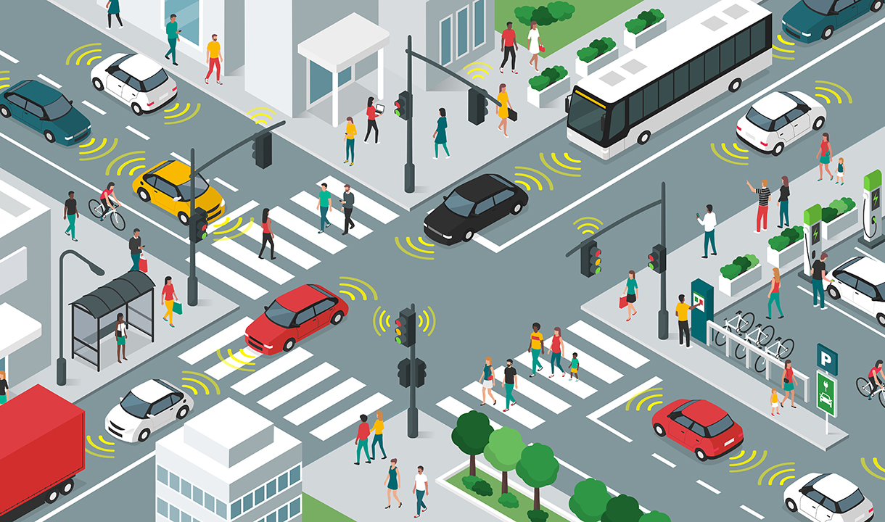
6. Control de Tráfico y Vehículos Autónomos
- Aplicación: Cámaras de tráfico y vehículos equipados con sistemas de visión por computador para detectar peatones, otros vehículos, señales de tráfico, y ajustar la conducción en consecuencia.
- Impacto: Mejora la seguridad vial y optimiza el flujo de tráfico, reduciendo accidentes y facilitando la movilidad urbana.
Sectores Clave y Aplicaciones 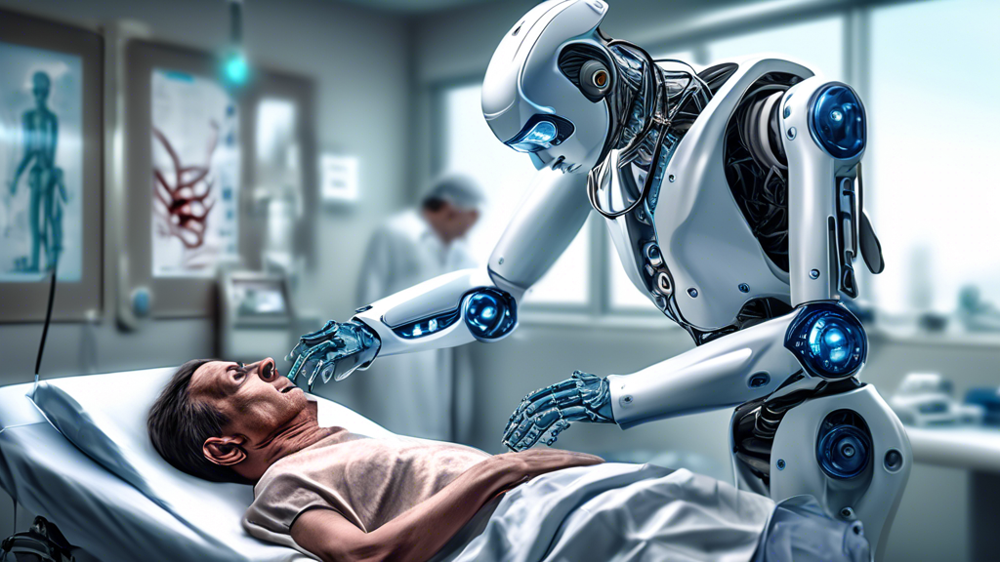
7. Diagnóstico Médico Asistido
- Aplicación: Aplicaciones móviles que analizan imágenes de la piel para detectar signos de cáncer o utilizan la cámara para medir la frecuencia cardíaca.
- Impacto: Empodera a los usuarios para realizar un monitoreo de su salud de manera regular, facilitando la detección temprana de enfermedades y promoviendo un enfoque preventivo en la atención médica.
Sectores Clave y Aplicaciones
8. Automatización de Tareas en Hogar y Oficina
- Aplicación: Aspiradoras robotizadas que mapean y navegan por las habitaciones utilizando visión por computador para limpiar de manera eficiente.
- Impacto: Aumenta la comodidad y la eficiencia en la limpieza del hogar, permitiendo que las personas dediquen tiempo a otras actividades mientras los robots realizan tareas rutinarias.
Impacto Global
La integración de la visión por computador en aplicaciones cotidianas ha tenido un impacto profundo, mejorando la seguridad, la eficiencia y la comodidad en la vida diaria. Estas tecnologías no solo optimizan procesos y reducen el tiempo necesario para realizar tareas, sino que también abren nuevas posibilidades para el desarrollo de productos y servicios innovadores, transformando la forma en que interactuamos con el mundo que nos rodea.
Artificial Intelligence 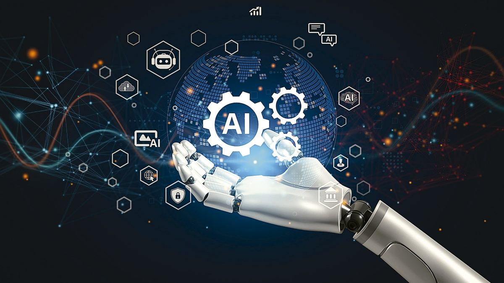
Neural Network 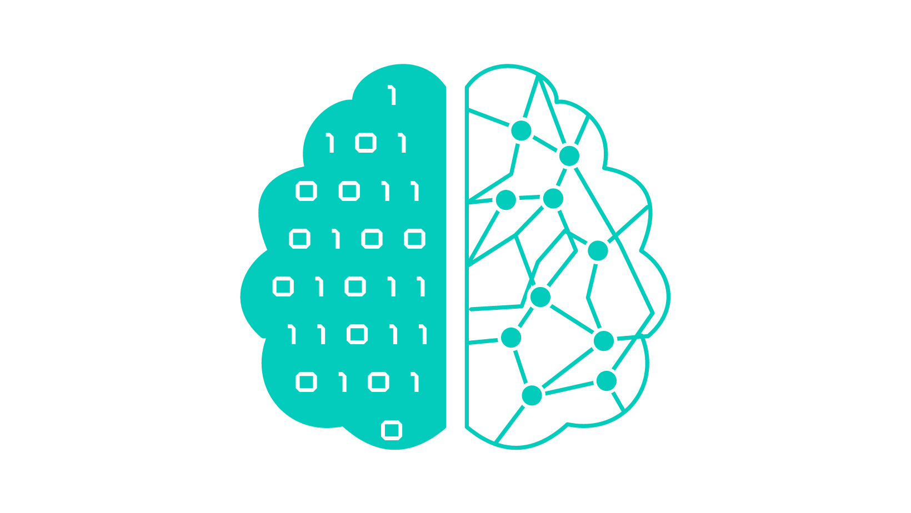
Las redes neuronales son sistemas computacionales inspirados en la estructura y funcionamiento del cerebro humano. Están compuestas por capas de neuronas artificiales que procesan datos y aprenden a través de ajustes en las conexiones (pesos) entre estas neuronas.
Convolutional Neural Network 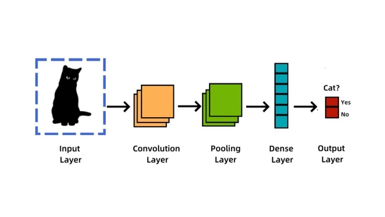
Redes Neuronales Convolucionales (CNNs), una arquitectura específica de redes neuronales, han revolucionado el campo del reconocimiento de imágenes y otros tipos de datos estructurados en forma de grillas, como audio y video.
Características Clave de las CNNs 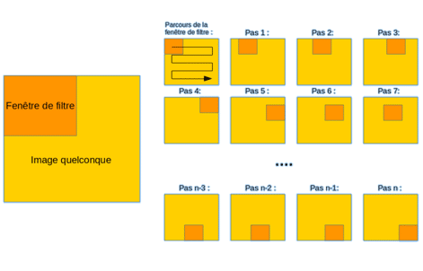
Capas Convolucionales
- Filtran la entrada a través de "kernels" que recorren la imagen, extrayendo características como bordes, texturas y patrones.
- Estas capas detectan características locales en la imagen, lo que las hace altamente efectivas para tareas de visión.
Características Clave de las CNNs 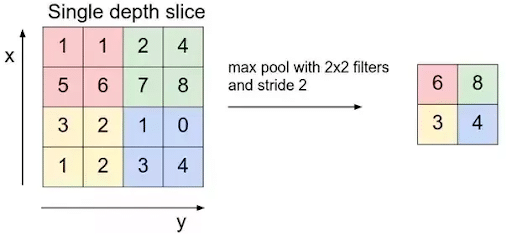
Pooling
- Reduce la dimensionalidad de las características extraídas, resumiendo la información más relevante y manteniendo la robustez frente a pequeñas variaciones o desplazamientos en la entrada.
Características Clave de las CNNs 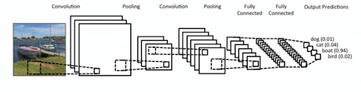
Capas Densas (Fully Connected)
- Después de varias capas convolucionales y de pooling, las CNNs utilizan capas densas para realizar las predicciones finales, conectando todas las características aprendidas con la salida.
Características Clave de las CNNs

Backpropagation
- Proceso de entrenamiento en el que la red ajusta sus pesos a través de la retropropagación del error, mejorando su capacidad para reconocer patrones específicos en los datos.
Aplicaciones Principales de las CNNs
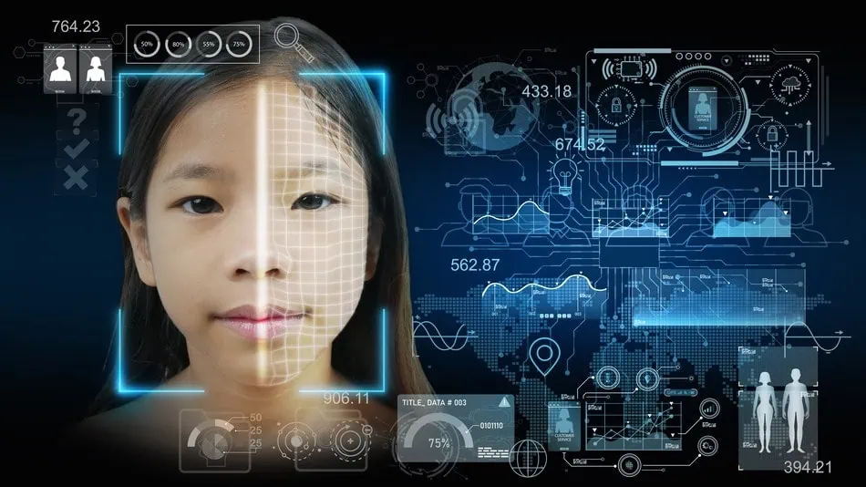
- Reconocimiento de Imágenes: Clasificación de objetos, detección de rostros, y segmentación de imágenes.
- Procesamiento de Video: Detección de movimiento y seguimiento de objetos.
- Reconocimiento de Voz: Análisis y transcripción de audio.
- Medicina: Detección de anomalías en imágenes médicas como radiografías o resonancias magnéticas.
Aplicaciones Principales de las CNNs
Las CNNs han transformado la inteligencia artificial, logrando avances en tareas que requieren comprensión visual, superando incluso el rendimiento humano en algunos casos.
Taller Práctico: Implementando una CNN para Reconocimiento de Imágenes